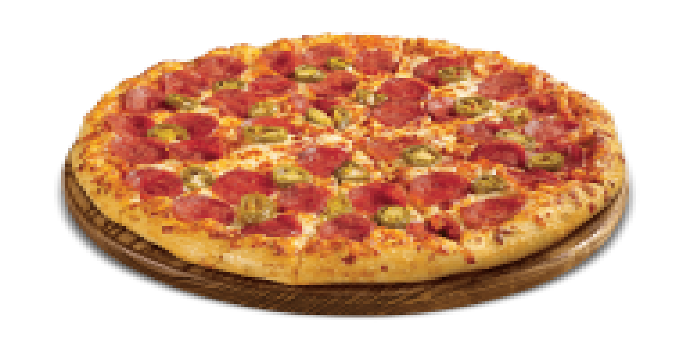

Pepperoni Pizza

Description
The quintessential Italian dish in its American spicy salami variant. Baked pie defined by its shallow crust and toppings such as tomato sauce, cheese and salami sausage.
Ingredients
Pizza Dough
- 2.5 cups plus 1.75 tbsp (617 g) lukewarm water
- 1.5 tbsp (14 g) instant yeast
- 6 cups plus 1/3 cup (950 g) all-purpose flour
- 3.25 tsp (19 g) fine sea salt
- 2 tbsp (25 g) granulated sugar
- Olive oil for dough
Sauce and assembly
- 2 tbsp (24 g) extra virgin olive oil
- 3.5 tbsp (49 g) unsalted butter
- 4 garlic cloves, sliced
- 1 tsp (2 g) red pepper flakes
- 28 oz (794 g) can of crushed tomatoes
- 1 onion, sliced in half, leaving root attached (for easy removal later on)
- 1 tsp (13 g) granulated sugar
- 1.5 tsp (2 g) dried oregano
- 1 tsp (1 g) dried thyme
- Salt and pepper
- 1.5 lbs (680 g) low-moisture mozzarella, grated coarsely
Steps
Pizza Dough
- Add water in container, heat up to 35°C and whisk in yeast to let sit for 5 minutes
- In a large bowl, add and fully mix flour, salt and sugar
- Add the water with yeast to the flour and mix by hand until a relatively smooth dough is obtained (4 minutes)
- Shape dough into a ball, add an abundant amount of olive oil to bowl
- Place dough into bowl and cover with greased plastic wrap to let rise in the fridge overnight
- On a clean work surface, lightly add some dough, then punch down the dough
- Divide dough into 300 g pieces
- Roll each piece into a light ball then put it in a baking sheet, leaving space inbetween each dough ball
- Cover with lid or plastic wrap and rest for 2-3 hours at room temperature or until it has doubled in size
Sauce and assembly
- Place pizza stone/steel (alternatively, use cast iron pan) in the oven to preheat at max temp (or 340°C ) for one hour before baking pizza
- In a medium saucepan over medium heat, add olive oil, garlic, butter and cook until the garlic turns light golden brown, stirring occasionally
- Add pepper flakes and saute for 20 seconds, stir in tomatoes, sugar, oregano and thyme
- Season with salt, add onion and bring to a simmer for 20 minutes, stirring occasionally
- Remove onion, adjust salt levels and fully cool down saucepan content
- Assembly: place dough ball onto lightly floured work surface, then generously flour dough
- Knead dough and stretch it until a 2 to 3 inches-wide round pizza dough is obtained
- Lay pizza dough down, add a few tbsp of sauce in the center then spread it evenly in a circular motion, leaving some edge uncovered
- Add a generous amount of freshly grated mozzarella and pepperoni slices ontop of pizza and place in the oven for 6-8 minutes
- Repeat for the rest of the dough